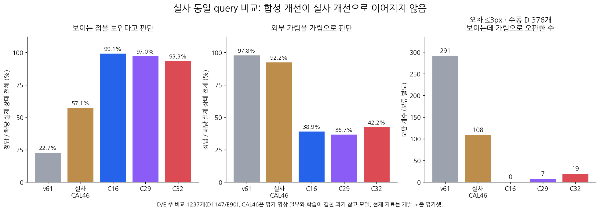

새 합성 검증의 작은 개선은 실사 전체 개선으로 이어지지 않았다. C32는 C16 대비 E 정답 +3/90이지만 D 정답 −67/1147이며, 수동 D·오차≤3px에서도 19/376 오판이 생겼다. 해결 또는 모델 채택 근거가 아니다.
초기 키포인트의 위치·crop 크기·순서와 기존 보류 45개를 그대로 사용했다. C16 저장 출력 비트 일치를 먼저 통과한 후 C29와 C32를 동결 평가했다. 새 학습·문턱 조정·encoder·영상 입력·PnP·좌표 수정은 없다. 두 후보 모두 원래 source qualification 실패 상태이며 채택하지 않았다.

v61의 학습 목표는 초기 query 최근접 단일 픽셀의 대상 실루엣 존재다. 사람의 의미상 corner 보임/가림과 같은 목표는 아니므로 v61의 높은 E 응답률만으로 좋은 가림 모델이라고 해석하지 않는다.
D=보임, E=외부 가림, U=보류/미해결. 실제 D1147개/E90개. recall은 U를 포함한 실제 상태 전체 분모다. U가 0%인 이 표와 전체 입력의 U45/1784는 분모가 다르다.
| 모델 | 실제 D → [D,E,U] | 실제 E → [D,E,U] | D precision | D recall | E precision | E recall | 보류율 |
|---|---|---|---|---|---|---|---|
| v61 | [260, 887, 0] | [2, 88, 0] | 99.2% | 22.7% | 9.0% | 97.8% | 0.0% |
| 기존 실사 CAL46 | [655, 319, 173] | [3, 83, 4] | 99.5% | 57.1% | 20.6% | 92.2% | 14.3% |
| 이전 C16 | [1137, 10, 0] | [55, 35, 0] | 95.4% | 99.1% | 77.8% | 38.9% | 0.0% |
| 합성 보강 C29 | [1113, 34, 0] | [57, 33, 0] | 95.1% | 97.0% | 49.3% | 36.7% | 0.0% |
| AUX gradient 제외 C32 | [1070, 77, 0] | [52, 38, 0] | 95.4% | 93.3% | 33.0% | 42.2% | 0.0% |
| 재질 | 모델 | 실제 D → [D,E,U] | 실제 E → [D,E,U] | D precision | D recall | E precision | E recall | 보류율 |
|---|---|---|---|---|---|---|---|---|
| 목재 | v61 | [145, 471, 0] | [0, 29, 0] | 100.0% | 23.5% | 5.8% | 100.0% | 0.0% |
| 목재 | 기존 실사 CAL46 | [448, 65, 103] | [2, 23, 4] | 99.6% | 72.7% | 26.1% | 79.3% | 16.6% |
| 목재 | 이전 C16 | [606, 10, 0] | [17, 12, 0] | 97.3% | 98.4% | 54.5% | 41.4% | 0.0% |
| 목재 | 합성 보강 C29 | [585, 31, 0] | [19, 10, 0] | 96.9% | 95.0% | 24.4% | 34.5% | 0.0% |
| 목재 | AUX gradient 제외 C32 | [549, 67, 0] | [15, 14, 0] | 97.3% | 89.1% | 17.3% | 48.3% | 0.0% |
| 정사각형 | v61 | [115, 416, 0] | [2, 59, 0] | 98.3% | 21.7% | 12.4% | 96.7% | 0.0% |
| 정사각형 | 기존 실사 CAL46 | [207, 254, 70] | [1, 60, 0] | 99.5% | 39.0% | 19.1% | 98.4% | 11.8% |
| 정사각형 | 이전 C16 | [531, 0, 0] | [38, 23, 0] | 93.3% | 100.0% | 100.0% | 37.7% | 0.0% |
| 정사각형 | 합성 보강 C29 | [528, 3, 0] | [38, 23, 0] | 93.3% | 99.4% | 88.5% | 37.7% | 0.0% |
| 정사각형 | AUX gradient 제외 C32 | [521, 10, 0] | [37, 24, 0] | 93.4% | 98.1% | 70.6% | 39.3% | 0.0% |
가시성 점수와 기존 기하 gate의 query 동일성까지 주장하는 분모가 아니다. 원래 cohort를 그대로 유지한다.
| 재질 | 모델 | 실제 D → [D,E,U] | 실제 E → [D,E,U] | D precision | D recall | E precision | E recall | 보류율 |
|---|---|---|---|---|---|---|---|---|
| 목재 | v61 | [154, 472, 0] | [1, 29, 0] | 99.4% | 24.6% | 5.8% | 96.7% | 0.0% |
| 목재 | 기존 실사 CAL46 | [448, 65, 113] | [2, 23, 5] | 99.6% | 71.6% | 26.1% | 76.7% | 18.0% |
| 목재 | 이전 C16 | [615, 11, 0] | [18, 12, 0] | 97.2% | 98.2% | 52.2% | 40.0% | 0.0% |
| 목재 | 합성 보강 C29 | [593, 33, 0] | [20, 10, 0] | 96.7% | 94.7% | 23.3% | 33.3% | 0.0% |
| 목재 | AUX gradient 제외 C32 | [557, 69, 0] | [16, 14, 0] | 97.2% | 89.0% | 16.9% | 46.7% | 0.0% |
| 정사각형 | v61 | [115, 416, 0] | [2, 59, 0] | 98.3% | 21.7% | 12.4% | 96.7% | 0.0% |
| 정사각형 | 기존 실사 CAL46 | [207, 254, 70] | [1, 60, 0] | 99.5% | 39.0% | 19.1% | 98.4% | 11.8% |
| 정사각형 | 이전 C16 | [531, 0, 0] | [38, 23, 0] | 93.3% | 100.0% | 100.0% | 37.7% | 0.0% |
| 정사각형 | 합성 보강 C29 | [528, 3, 0] | [38, 23, 0] | 93.3% | 99.4% | 88.5% | 37.7% | 0.0% |
| 정사각형 | AUX gradient 제외 C32 | [521, 10, 0] | [37, 24, 0] | 93.4% | 98.1% | 70.6% | 39.3% | 0.0% |
목재153개/정사각형223개. 전체 평가의 필터나 학습·문턱 선택 기준으로 사용하지 않은 보조 진단이다.
| 재질 | 모델 | N | 보임 정답 | 가림 오판 | 보류 |
|---|---|---|---|---|---|
| 목재 | v61 | 153 | 42 | 111 | 0 |
| 목재 | 기존 실사 CAL46 | 153 | 116 | 11 | 26 |
| 목재 | 이전 C16 | 153 | 153 | 0 | 0 |
| 목재 | 합성 보강 C29 | 153 | 147 | 6 | 0 |
| 목재 | AUX gradient 제외 C32 | 153 | 138 | 15 | 0 |
| 정사각형 | v61 | 223 | 43 | 180 | 0 |
| 정사각형 | 기존 실사 CAL46 | 223 | 89 | 97 | 37 |
| 정사각형 | 이전 C16 | 223 | 223 | 0 | 0 |
| 정사각형 | 합성 보강 C29 | 223 | 222 | 1 | 0 |
| 정사각형 | AUX gradient 제외 C32 | 223 | 219 | 4 | 0 |
| 재질 | 후보 | 둘 다 정답 | 기존 정답 → 오답 | 기존 오답 → 정답 | 둘 다 오답 |
|---|---|---|---|---|---|
| 목재 | C29 | 593 | 25 | 2 | 25 |
| 목재 | C32 | 559 | 59 | 4 | 23 |
| 정사각형 | C29 | 547 | 7 | 4 | 34 |
| 정사각형 | C32 | 540 | 14 | 5 | 33 |
자기 가림은 사용자의 upstream 기하 처리 대상이다. 아래 E/hidden 응답은 학습 모델이 외부/자기 원인을 구별했다는 의미가 아니다. 정사각형의 human S support=0도 정답 증거가 아니다.
| 재질 | 모델 | 사람 S 수 | binary hidden 응답 | 보임 응답 | 미해결 |
|---|---|---|---|---|---|
| 목재 | v61 | 21 | 12 | 9 | 0 |
| 목재 | 기존 실사 CAL46 | 21 | 3 | 13 | 5 |
| 목재 | 이전 C16 | 21 | 0 | 21 | 0 |
| 목재 | 합성 보강 C29 | 21 | 1 | 20 | 0 |
| 목재 | AUX gradient 제외 C32 | 21 | 2 | 19 | 0 |
| 정사각형 | v61 | 0 | 0 | 0 | 0 |
| 정사각형 | 기존 실사 CAL46 | 0 | 0 | 0 | 0 |
| 정사각형 | 이전 C16 | 0 | 0 | 0 | 0 |
| 정사각형 | 합성 보강 C29 | 0 | 0 | 0 | 0 |
| 정사각형 | AUX gradient 제외 C32 | 0 | 0 | 0 | 0 |
정답 상태는 D1168/E92/S136/화면 밖24/미주석356/매핑 미상8이다. 전부 D/E 평가 정답은 아니다. 기존 실사 모델의 기하 S는 외부 E로 강제하지 않고 미해결에 합산하되 별도 표시한다.
| 그룹 | 모델 | 전체 | D 응답 | binary E 응답 | 전체 U | U율 | legacy U | 기하 S |
|---|---|---|---|---|---|---|---|---|
| 전체 | v61 | 1784 | 552 | 1187 | 45 | 2.5% | 0 | 0 |
| 전체 | 기존 실사 CAL46 | 1784 | 717 | 559 | 508 | 28.5% | 237 | 271 |
| 전체 | 이전 C16 | 1784 | 1604 | 135 | 45 | 2.5% | 0 | 0 |
| 전체 | 합성 보강 C29 | 1784 | 1564 | 175 | 45 | 2.5% | 0 | 0 |
| 전체 | AUX gradient 제외 C32 | 1784 | 1495 | 244 | 45 | 2.5% | 0 | 0 |
| 목재 | v61 | 840 | 272 | 528 | 40 | 4.8% | 0 | 0 |
| 목재 | 기존 실사 CAL46 | 840 | 470 | 91 | 279 | 33.2% | 151 | 128 |
| 목재 | 이전 C16 | 840 | 765 | 35 | 40 | 4.8% | 0 | 0 |
| 목재 | 합성 보강 C29 | 840 | 743 | 57 | 40 | 4.8% | 0 | 0 |
| 목재 | AUX gradient 제외 C32 | 840 | 696 | 104 | 40 | 4.8% | 0 | 0 |
| 정사각형 | v61 | 944 | 280 | 659 | 5 | 0.5% | 0 | 0 |
| 정사각형 | 기존 실사 CAL46 | 944 | 247 | 468 | 229 | 24.3% | 86 | 143 |
| 정사각형 | 이전 C16 | 944 | 839 | 100 | 5 | 0.5% | 0 | 0 |
| 정사각형 | 합성 보강 C29 | 944 | 821 | 118 | 5 | 0.5% | 0 | 0 |
| 정사각형 | AUX gradient 제외 C32 | 944 | 799 | 140 | 5 | 0.5% | 0 | 0 |
새 합성 VAL에서는 C29→C32 외부 가림 정답이112→116/130으로 늘었지만, 실사 D 오판이 크게 증가했다. 목표 혼합을 줄이는 것만으로 전이 문제가 풀리지 않았다. 초기 좌표 오차만으로 설명하기도 어렵다. 공개 실사에서 실제 초기 추론 대상·native 부위와 가림 라벨의 대응을 맞추는 작업, 작은 틈과 부위를 읽는 표현의 source 진단은 기존 계획대로 남아 있다. 실사 결과로 모델·문턱을 고르지 않는다.
현재223은 반복 개발에 노출된 평가 자료이며 독립 blind test가 아니다. 기존 실사 CAL46 모델은 학습 중복이 있는 과거 참고다. 사람의 reference 가림 라벨은 query 단일 픽셀 mask gold가 아니다. 성공 가능성의 수치를 추정할 근거는 없으며, 이번 결과는 해결을 입증하지 못한다.